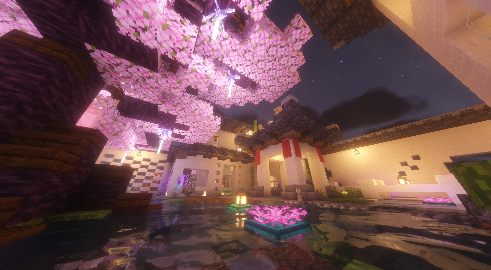

欢迎来到Land服务器网站
QQ群
B站
宣传片
Land Resources Pack
下载
文件大小
各种各样的音乐与图片
Land Resources Pack 22
下载
247MB
Land Resources Pack 21
下载
238MB
Land Resources Pack 20.1
下载
164MB
Land Resources Pack 1
下载
20.6MB
2023 - 2025 Land Server / By White_foggy